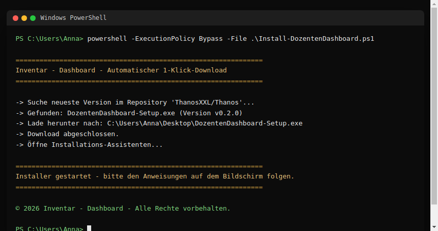
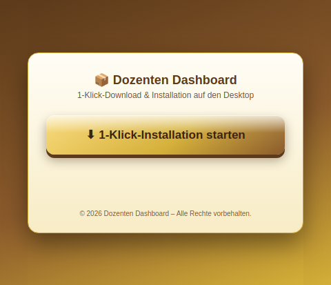
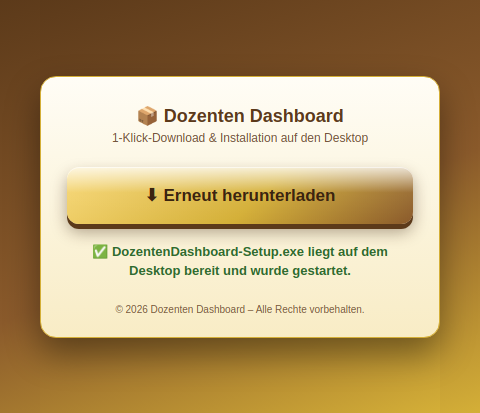

1. Überblick für Admins
Für den Rollout im Unternehmen/Kollegium stehen zwei automatisierte Wege zur Verfügung, jeweils für Windows optimiert:
| Weg | Für wen | Ablauf |
|---|---|---|
| PowerShell-Skript | IT-Admins, Skripting-erfahrene Nutzer | Einmalig ausführen (lokal oder per Ein-Zeiler) → lädt automatisch herunter und installiert |
| Downloader-App | Alle Nutzer | Kleine, portable .exe einmal verteilen → ein Klick im Programm erledigt den Rest |

2. PowerShell-Installationsskript
Datei: scripts/Install-DozentenDashboard.ps1. Fragt die GitHub-API nach der neuesten
Version, lädt die Windows-Installationsdatei direkt auf den Desktop des aktuellen Benutzers und
startet sie. Die vollständige technische Doku steht als PowerShell-„Comment-Based Help" im Skript
selbst (Get-Help .\Install-DozentenDashboard.ps1 -Full).
Ausführen
Parameter:
| Parameter | Wirkung |
|---|---|
-Silent | Installiert vollständig unbeaufsichtigt (NSIS /S) – z. B. für IT-Rollouts |
-NoRun | Lädt nur herunter, startet den Installer nicht automatisch |
-Repo | Anderes GitHub-Repository ansprechen (Standard: ThanosXXL/Thanos) |

3. Downloader-App (1-Klick, portable .exe)
Für Nutzer ohne PowerShell-Erfahrung gibt es Dozenten Dashboard Downloader – eine winzige,
portable Windows-App (kein Installationsschritt nötig, einfach doppelklicken). Sie zeigt genau einen
Button; ein Klick lädt automatisch die neueste Version herunter, speichert sie auf dem Desktop und
startet den Installer.


Quellcode: downloader/ (eigenes kleines Electron-Projekt, wird zusammen mit der Hauptanwendung im CI-Workflow gebaut und veröffentlicht).
4. Admin-Modus & Nachbestellungen in der App
Im Inventar - Dashboard gibt es oben rechts den Button „🔒 Admin-Modus". Beim ersten Klick wird eine PIN eingerichtet (mind. 4 Zeichen); danach muss diese PIN bei jedem Programmstart erneut eingegeben werden, um den Admin-Bereich freizuschalten.

Im entsperrten Zustand erscheint oben im Inventar - Dashboard ein Admin-Bereich mit zwei Karten:

Alle Download-Versionen
Direkte Links zu Windows-Installer, Downloader-App, macOS- und Linux-Build sowie zur GitHub-Releases-Seite – praktisch, um Kolleg:innen schnell die passende Datei zuzuschicken.
Nachbestellungen
Für jedes Gerät lässt sich eine Nachbestellung mit Menge anlegen; der Status (Offen, Bestellt, Erledigt) kann jederzeit geändert werden. Diese Funktion ist bewusst nur im Admin-Modus sichtbar und bedienbar, damit reguläre Nutzer keine Bestellungen auslösen können.